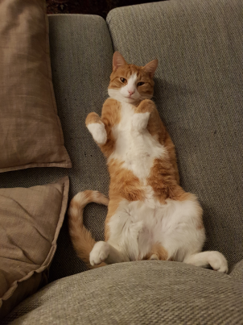

Tor

Hello and welcome to my webpage! My name is Claes, and this here dog is my parents late Golden Retriever, Tor! I miss you, buddy!
Pariatur cillum laborum id voluptate. Aliquip sunt do amet occaecat eu tempor eiusmod veniam id pariatur et reprehenderit. Deserunt dolore in excepteur veniam exercitation minim adipisicing.

Wolfas
Född: 20 april 2017
Död: 30 oktober 2019
Wolfas var min och flickvännens första gemensamma sällskapsdjur och vi älskade honom som den familjemedlem han var.
Han var en busig och fartfylld liten katt som charmade brallorna av alla han träffade. Han var orädd för människor och andra katter, och skaffade sig många vänner över artgränserna. Han kommer för alltid vara saknad.